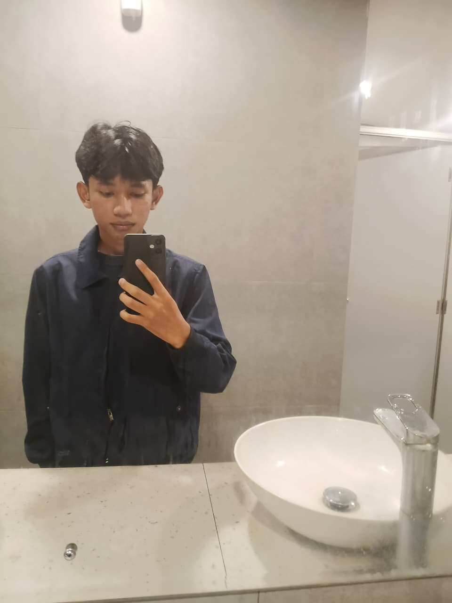

Membangun solusi digital yang fungsional dengan estetika yang bersih. Berbasis di Cileungsi, Indonesia.

Halo! Saya Faris, seorang siswa Rekayasa Perangkat Lunak (RPL) di SMK Fatahillah Cileungsi. Saya memiliki gairah tinggi dalam membangun aplikasi web yang efisien dan user-friendly.
Selain fokus di dunia coding, saya aktif berkontribusi dalam lingkungan organisasi yang mengasah kemampuan leadership, komunikasi, dan manajemen proyek saya secara nyata. Pengalaman ini membentuk saya menjadi pribadi yang adaptif dalam berkolaborasi dan efisien dalam menghadapi berbagai tantangan tim.
Terpilih sebagai Ketua Organisasi.
Memulai pendidikan kejuruan di SMK Fatahillah Cileungsi.
Melanjutkan pendidikan menengah pertama di SMPIT Fatahillah.
Memulai pendidikan dasar di SDN Citra Indah.
Saya selalu terbuka untuk diskusi mengenai proyek baru atau peluang kerja.
Hubungi via WhatsApp
Media Sosial
Temui saya di platform berikut — akan saya hubungkan nanti.